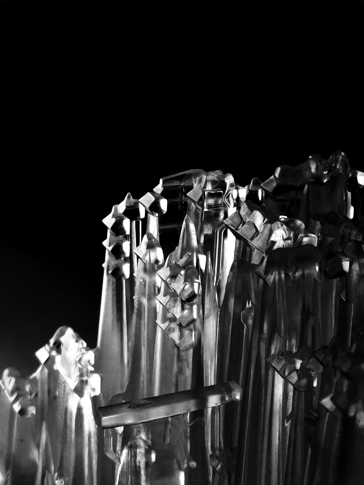
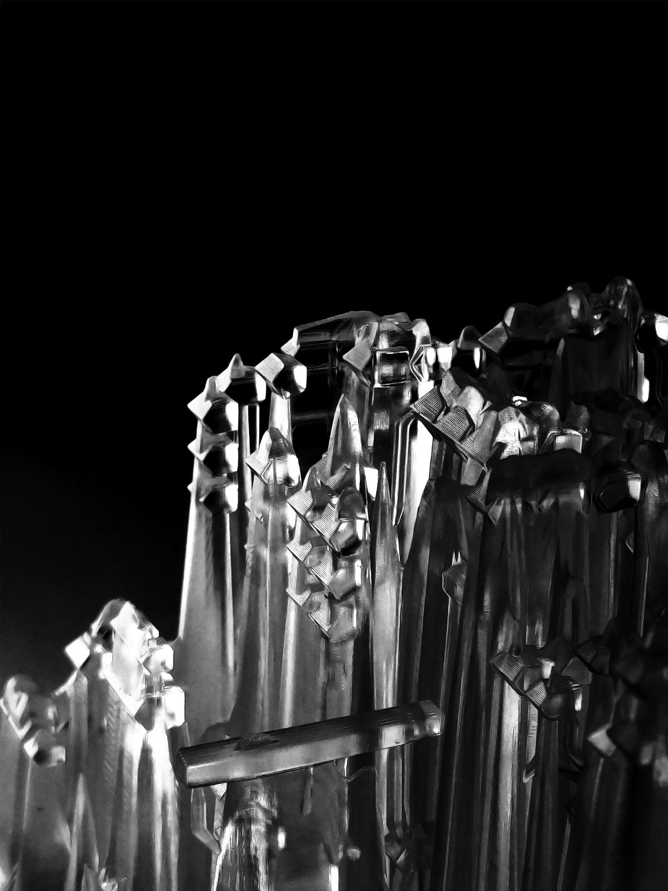

RAVE RUNNER
Speculative architecture generator
Antoine Blais_Victor Demers_Simon Gavioli_Louis-Gabriel Imreh

Rave-Runner is an exploration of speculative spaces, of potential realities where architecture fluctuates at the speed of electronic circuits and optical fibers. The project was made in the context of a procedural architecture contest using Grasshopper for Rhino. The result is a generator which creates a new space for interpretation with each iterative loop. One of said iterations was then 3D printed and explored in depth.

Grasshopper node tree
Renders - Antoine Blais
3D Printing/Modeling - Victor Demers
Presentation - Simon Gavioli
Photography/Grasshopper - Louis-G Imreh

 
